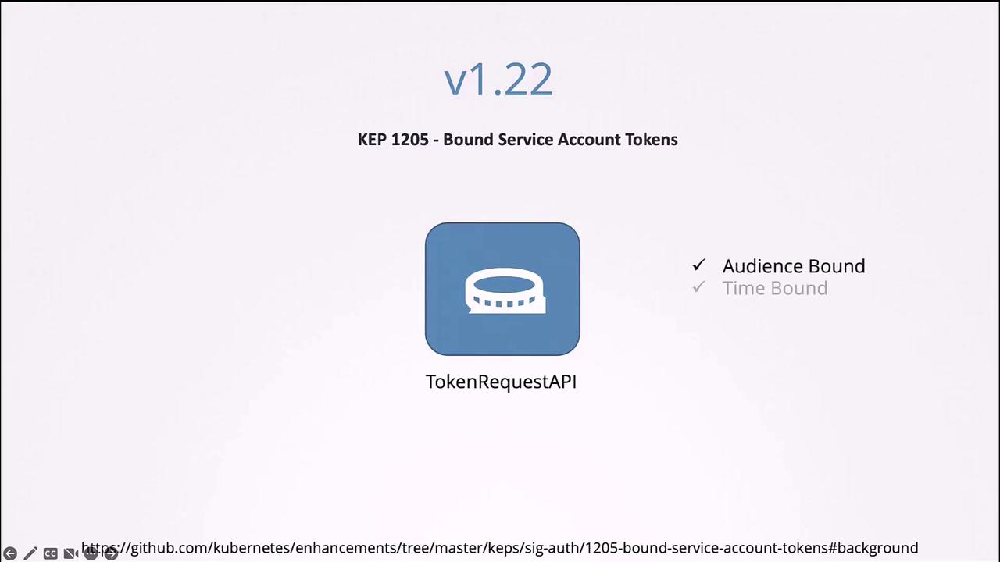

يا هلا بيك يا رائد الفضاء! ⚓ في المهمة دي هنتعلم إزاي نتحكم في السفن بتاعتنا:
ConfigMaps, Secrets, Service Accounts, وكمان تظبيط الموارد!
الجزء ١
🛡️ أساسيات الأمان في Docker
عشان نفهم الـ Security في الـ Kubernetes كويس، لازم الأول نأسس نفسنا صح في الـ Docker Security.
الموضوع كله بيدور حوالين إزاي نعزل الـ Processes.
Process Isolation
تخيل عندك سيرفر (Host) عليه شوية Services والـ Docker Daemon. لما بتعمل Run لكونتينر، زي مثلاً:
docker run ubuntu sleep 3600
الكونتينر ده في الحقيقة هو مجرد Process عادي على الـ Host، بس معزول باستخدام
حاجة اسمها Namespaces.
جوه الكونتينر، الـ Process ده شايف نفسه واخد PID رقم 1 (يعني هو الكبير بتاع الكونتينر).
لكن لو بصيت من بره الكونتينر (على الـ Host) وعملت ps aux، هتلاقيه واخد PID مختلف
وعادي جداً.
User Context
باي ديفولت، الكونتينر بيشتغل بصلاحيات الـ root.
وده طبعاً مش أحسن حاجة في الـ Security. ممكن نغير اليوزر ده وإحنا بنشغل الكونتينر:
docker run --user=1000 ubuntu sleep 3600
أو نحدده بشكل دائم في الـ Dockerfile:
FROM ubuntu
USER 1000
Linux Capabilities
حتى لو أنت Root جوه الكونتينر، الـ Docker مش بيديك كل الصلاحيات المطلقة. بيستخدم ميزة في
الكيرنل اسمها Linux Capabilities عشان يقلل صلاحيات الـ Root
جوه الكونتينر.
يعني مثلاً، الـ Root جوه الكونتينر مايقدرش يعمل Reboot للـ Host.
الـ Capabilities بتحدد إيه اللي مسموح للـ Root يعمله جوه الكونتينر
⚠️ تحذير هام
لو استخدمت --privileged، أنت كدة بتدي الكونتينر كل صلاحيات الـ Root بتاعة الـ
Host.
ده خطر جداً إلا لو أنت عارف بتعمل إيه! ده زي ما تدي مفاتيح المحطة كلها لواحد لسه متعين جديد.
🗝️
المشكلة: الـ Pod بيشغل sleep 1200 وإحنا عايزينه ينام 2000
ثانية. الحل: بما إننا ماينفعش نعدل الـ Command لـ Pod شغال، لازم نعمله Replace.
kubectl get pod webapp-green -o yaml > webapp-green.yaml
vi webapp-green.yaml
# (Edit the args to ["--color=green"])
kubectl replace --force -f webapp-green.yaml
تعديل الـ Pod وهو شغال بيحتاج حيلة الـ Replaceالجزء ٤
🔐 سياق الأمان (Security Contexts)
ممكن نتحكم في مين اليوزر اللي بيشغل الكونتينر، وإيه الصلاحيات (Capabilities) اللي معاه جوه الـ
Pod.
إعدادات الـ Container Level دائماً بتغطي وبتعمل Override
لإعدادات الـ Pod Level.
الكونتينر هو اللي بيكسب!
الجزء ٥
🤖 حسابات الخدمة (Service Accounts)
الـ Kubernetes بيميز بين نوعين من الاكونتات:
User Accounts للبشر (Admins, Developers)، و
Service Accounts للآلات (Pods, Bots).
لما بتعمل Pod، أوتوماتيك بيتعمل Mount للـ default Service Account وتوكن عشان يقدر
يكلم الـ API Server.
الـ Pods بتحتاج هوية عشان تتكلم مع الـ API
Creating a Service Account
kubectl create serviceaccount dashboard-sa
وبعدين تربطه بالـ Pod:
spec:
serviceAccountName: dashboard-sa
الـ Token بيتحط جوه الكونتينر كملف
⚠️ تحديث مهم (K8s 1.24+)
الـ Secret Tokens لم تعد تُنشأ أوتوماتيكياً مع الـ Service Account.
لو محتاج Token دائم، لازم تعمله يدوياً، أو تستخدم الـ TokenRequest API للحصول
على Token مؤقت (وده الأكثر أماناً).

التوكنز الجديدة ليها وقت صلاحية عشان الأمان
🧪 تجربة عملية (Lab)
في اللاب، شوفنا الـ Dashboard بيحاول يكلم الـ API وفشل. السبب إنه كان بيستخدم الـ
default SA اللي صلاحياته محدودة.
الحل: عملنا SA جديد اسمه dashboard-sa وعملنا Update للـ
Deployment.
بعد ما اديناه الصلاحية، الـ Dashboard اشتغلت!الجزء ٦
🗺️ الإعدادات والأسرار (ConfigMaps & Secrets)
إزاي نفصل الكود عن الإعدادات؟ عشان ما نضطرش نبني Image جديدة كل ما نغير لون الموقع!
Environment Variables
أبسط طريقة عشان نخلي التطبيق Configurable هي الـ Env Vars.
env:
- name: APP_COLOR
value: pink
ConfigMaps
الـ ConfigMap بتجمع كل إعداداتك في مكان واحد، بدل ما تكررها في كل Pod.